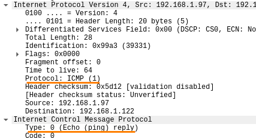
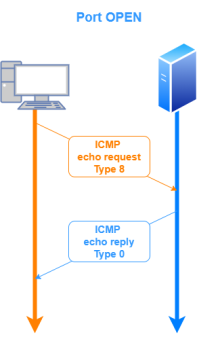
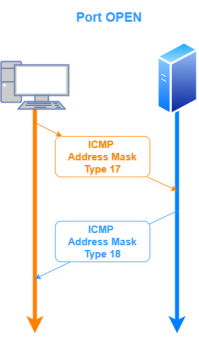

-PE/-PP: ICMP ping
ICMP (Internet Control Message Protocol) is an error-reporting
protocol.
ICMP has no concept of ports, as TCP and UDP do, but
instead uses types and codes
The most common method to identify live hosts is the
ICMP ping
sweep. It consists of ICMP ECHO requests sent to multiple hosts. If a given host is alive, it will return
an ICMP ECHO reply.
Ping sweeping tools
we send
ICMP echo requests and if the host replies
with
ICMP echo reply then the host is alive
Because
many hosts and firewalls block these packets rather than responding these scans are rarely reliable
enough against unknown targets over the Internet.
But for system
administrators monitoring an internal network, this can be a practical and efficient approach.
To
check which
protocol and
Type of this protocol is sent, we have to check in
Wireshark:
ICMP
echo(ping)
nmap -PE -sn -n 192.168.1.97 --disable-arp-ping
-PE → if we only use -sn without -PE, nmap will also send a TCP SYN packet on ports 80 and 443 of each
host.
Then we can repeat the scan with the most common ports
-PE22,24,53,80,111,135,139,441,443,445,711,1025,1026,1029
--disable-arp-ping → if we are using it in the
local network
ICMP Timestamp
nmap -PP -sn -n 192.168.1.97 --disable-arp-ping
ICMP Address
Mask
nmap -PM -sn -n 192.168.1.97
 https://nmap.org/book/man-host-discovery.html
{kind=link}
{kind=link}
{kind=link}